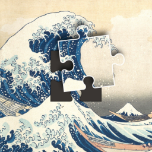

浮世絵のジグソー
組み上げると、絵の見どころを説明するジグソーパズル
葛飾北斎の「冨嶽三十六景」、歌川広重の「東海道五拾三次」「名所江戸百景」、喜多川歌麿の絵など、浮世絵24枚を、凸凹のある本物の形のピースで組むジグソーパズルです。
- 見どころ：組み上げると、絵の上に番号の丸が出ます。たたくと「遠くの富士山は小さく、波の形とそっくり」のように、その所の見どころを説明します（24枚で86か所）
- 画廊：組んだ絵は額に入って並びます。いちばん多いピースで組んだ数の印がつきます
- ピースの数は 12・24・48・96・150 から選べます。ピースを回す遊び方もあります
- 「はしだけ」でふちのピースだけを出せます。盤にうすい見本を出せ、2本の指で大きくできます
- 途中でやめても、続きから組めます
- パズルの途中に、画面いっぱいの広告は出ません（画面のいちばん下の小さな広告だけです）。登録・課金はありません
絵はすべて、著作権の切れた江戸時代の作品です。画像はメトロポリタン美術館（The Metropolitan Museum of Art）が Open Access（CC0）で公開しているものを使っています。